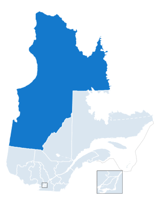

Une région pleine de richesses!
Autrefois appelée Ungava, Nord-du-Québec et maintenant Eeyou Istchee-Baie James, notre région est reconnue par ses activités reliées aux ressources naturelles.
Notre région est reconnue pour ses exploitations minières, forestières et pour ses nombreux cours d'eau appréciés par les amateurs de pêche. la pêche. De plus en plus, nos attraits reliés à la nature sont prisés partout dans la province. Notre potentiel est immense.
Nous sommes qu'à nos débuts dans le domaine touristique mais l'offre est diversifié et de qualité.
Le mot RICHESSE prend tout son sens avec les diversités culturelles qui nous caractérisent.
Notre région administrative (région 10) est la plus grande du Québec. Selon l'Institut de la statistique du Québec, en 2020, la population totale de région comptait 46 178 habitants.
Un peu de statistiques
Divisé en 3 municipalités régionales de comté (MRC), la région se compose principalement par trois grands
groupes d'habitants.
- Plus au nord, la MRC de l'Administration régionale de Kativik (14 361 habitants)
- Vers la Côte de la Baie-d'hudson ainsi que dans les terres plus à l'Ouest, la MRC Eeyou Istchee(18 347 habitants).
- La MRC de la Jamésie(13 470) au sud.
Source: Institut de la statistique du Québec
Découvrer l'immensité
C'est un territoire qui couvrent environ 55% de la province. Une aire de jeu presque indéfinie pour des kayakistes!